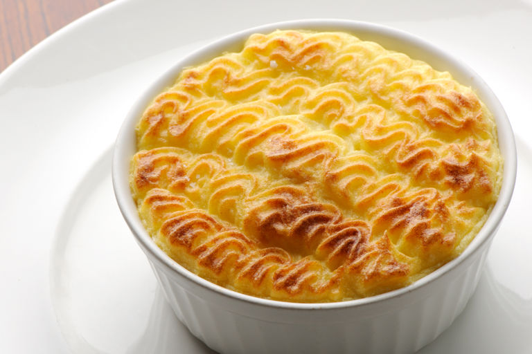

Shepherd's Pie

Description
A classic British and Irish dish that’s loved the world over, shepherd’s pie is the ultimate comfort food.
Made with lamb mince, a rich gravy and buttery, creamy mashed potatoes, this recipe has all the elements for a perfect slow Sunday dinner and is on the table in just over an hour.
Ingredients
- 1 tbsp olive oil
- 1 brown onion, halved, finely chopped
- 1 carrot, peeled, finely chopped
- 2 celery sticks, trimmed, finely chopped
- 1 tbsp Coles Tomato Paste
- 500g lamb mince
- Salt & freshly ground black pepper
- 2 tbsp plain flour
- 500ml (2 cups) Massel beef style stock
- 1 tbsp worcestershire sauce
- 1 bay leaf
- 4 (about 200g each) desiree potatoes, peeled, chopped
- 40g butter
- 125ml (1/2 cup) milk
- Melted butter, to brush
Method
- Heat 1 tbsp olive oil in a large saucepan over medium-high heat. Add 1 brown onion, halved, finely chopped, 1 carrot, peeled, finely chopped and 2 celery sticks, trimmed, finely chopped and cook, stirring, for 5 minutes or until soft. Add 500g lamb mince and cook, stirring to break up any lumps, for 5 minutes or until lamb changes colour.
- Add the 2 tbsp plain flour and cook, stirring, for 2 minutes or until combined. Add 500ml (2 cups) Massel beef style stock, 1 bay leaf, 1 tbsp worcestershire sauce and 1 tbsp Coles Tomato Paste. Bring to the boil. Reduce heat to low and cook, stirring occasionally, for 30 minutes or until sauce thickens. Taste and season with salt & freshly ground black pepper.
- Meanwhile: cook 4 (about 200g each) desiree potatoes, peeled, chopped in a saucepan of salted boiling water for 15 minutes or until tender. Drain well. Return to the pan with the 40g butter. Use a potato masher or fork to mash until smooth. Add 125ml (1/2 cup) milk and use a wooden spoon to stir until combined. Taste and season with salt and pepper.
- Preheat oven to 200C. Spoon lamb mixture into a 2L (8-cup) capacity ovenproof baking dish, or use four individual ovenproof serving dishes. Top with mashed potato and use a fork to spread over lamb mixture. Brush with melted butter. Bake in preheated oven for 20 minutes or until mashed potato is golden brown. Serve immediately.